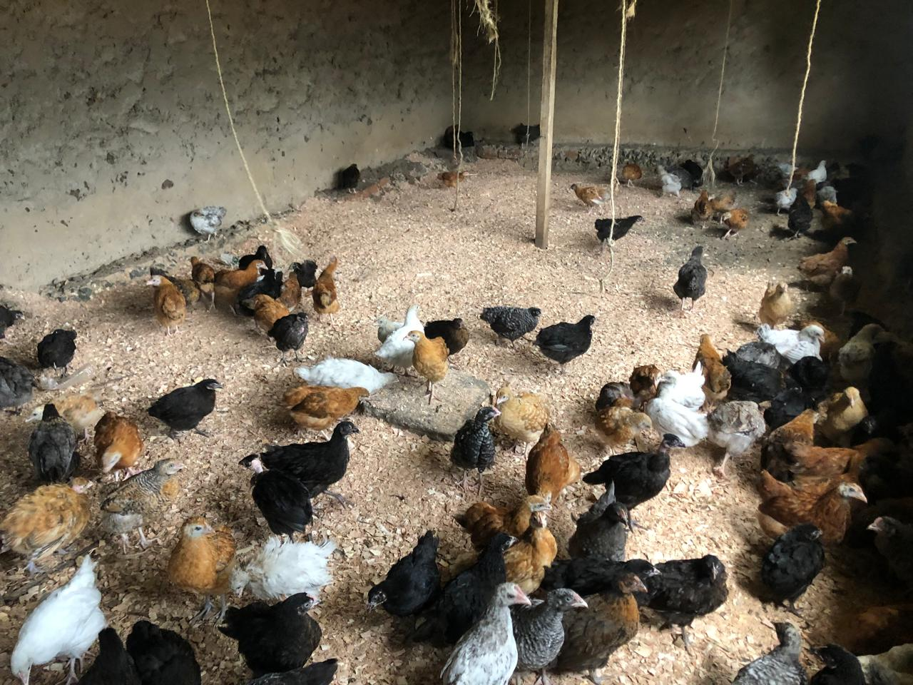
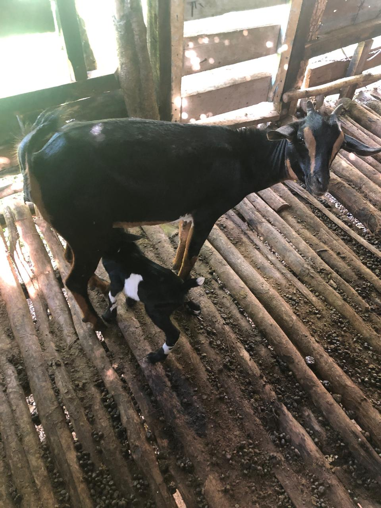

Ongoing Income Generating Activities (IGAs)
Poultry Farming
We provide women groups with improved kienyeji chicken, veterinary support, and equipment to strengthen household income and improve food security year-round.

Tree Nursery
Through community tree nurseries, members earn extra income while contributing to reforestation, climate resilience, and sustainable environmental management.

Goat Rearing
We support households with goats as seed capital to establish sustainable livestock enterprises, ensuring long-term financial stability and improved nutrition.
